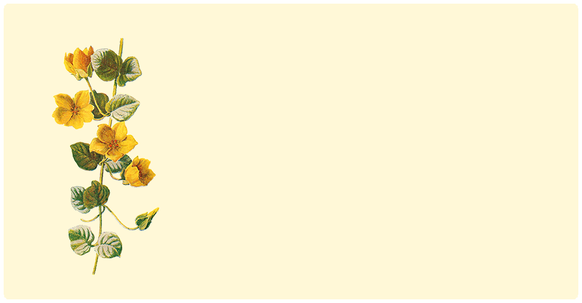
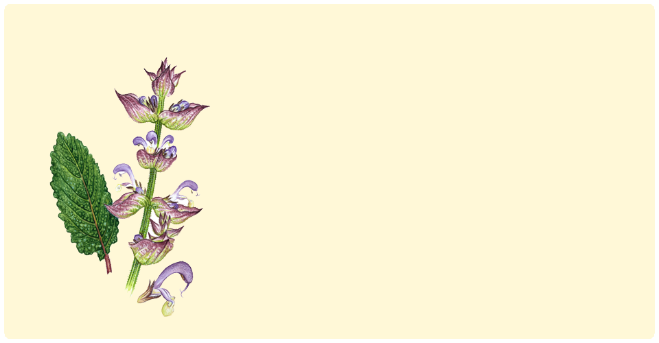
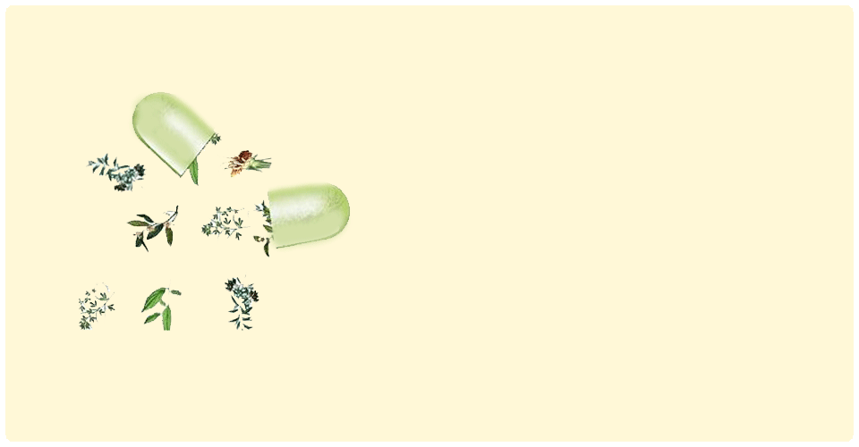

הכירו את בן חרצית
בצמח קיים חומר פעיל הנקרא parthenium אשר
מרחיב את כלי הדם באיזור המצח וכך מקל באופן משמעותי
על מגרנות קשות ותורם בהורדת חום
לבן חרצית סגולות רבות נוספות...

גידול צמחי מרפא בבית
מהם צמחי המרפא המומלצים לגידול ביתי? איך לגדל ולטפח את הצמח הצורה הטובה ביותר? כאן תלמדו את יסודות הגידול של צמחי המרפא! הכנסו והתחילו המלאכה...
למידע נוסף

סובלים מכאבי ראש?
אפשר לומר די לכאב!
גלו אילו צמחי מרפא מתאימים לכאבי הראש
ולמגרנות קשות,הכאב יעלם בדרל הטבעית והבריאה
סגולות הצמחים
יש לי כאב בטן איך אדע באיזה צמח להשתמש?
לחץ וגלה איך כל צמח משפיע על האיזורים השונים בגוף